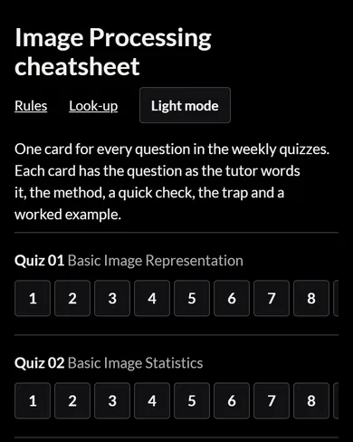
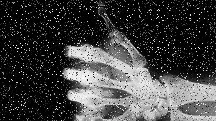

Final Faaja
Faaja: pull until it snaps. The last lap of uni, three tests in December.
-
Professional Issues, Computing and Society
MOD002647
Practice quiz. 469 questions, the 2024-25 past paper and a mock test.
The test: 40 questions in 50 minutes.

-
Image Processing
MOD002643
Cheatsheet. One card for every weekly quiz question, 135 cards for quizzes 1 to 9.
The test: 1.5 hours, 50% of the module. It draws on the weekly Canvas quizzes.


From Quiz 07: which filter removes this noise? -
Artificial Intelligence
MOD004553
Practice quiz. 372 questions, revision notes and a timed paper.
The test: 50 minutes on a computer, 50% of the module. Mostly written answers.